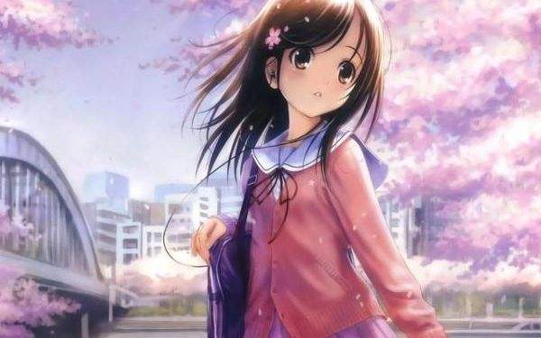
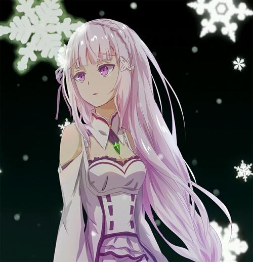

《天气之子》是新海诚执导、Comix Wave Film制作 的原创动画电影，该片讲述了少年帆高与拥有操控天气超能力的少女阳菜之间的奇幻爱情故事。 影片于2019年7月19日在日本上映，中国香港由安乐影片代理，于2019年8月8日上映；中国台湾由车库娱乐代理， 于2019年9月12日上映；中国内地由华夏电影引进，于2019年11月1日上映。
“想尝试前往，那道光芒之中”
高中一年级的夏天，从离岛离家出走，来到东京的帆高。 但是他的生活立马变得穷困，在度过孤独的每一天之后终于找到的工作，是为古怪的超自然杂志撰稿。
如同预示着他接下来的命运一般，连日不断地下雨。此时，在人潮熙熙攘攘的都市一角，帆高遇到了一位少女。
由于某些缘故，少女·阳菜和弟弟两人一起坚强生活。而她，拥有不可思议的能力。
“呐，现在开始就要放晴了哦”
雨逐渐停止，街道笼罩在美丽的光芒中。那是仅仅在心中祈祷，就能让天空放晴的力量——
《我们仍未知道那天所看见的花的名字。》是由日本动画公司A-1 Pictures制作的原创电视动画，于2011年4月14日起在日本富士电视台的“noitaminA”节目播出， 全11话。官方的简称为“あの花”(那朵花)，在中国通常又被称为“未闻花名”。同名剧场版于2013年8月31日公开播映。
《我们仍未知道那天所看见的花的名字。》是一部用直达内心的笔触描写青春期的少男少女在面对恋情、友情、纠葛时， 有欢欣笑容也有伤心泪水的青春原创动画片。
从小时候起一直青梅竹马的6人，却在升上高中之后彼此有了距离。不太与人们接触的主角宿海仁太、有点被小太妹熏染的安城鸣子、进入重点高中的松雪集与鹤见知利子、放弃读高中而展开旅行的久川铁道、只有幼年死去的本间芽衣子（灵魂，最初只有仁太能看见）还是一如从前。有一天， 面码对仁太说：“帮我实现一个愿望吧”。仁太虽然有点为难，却还是答应帮助面码实现愿望。 以此为契机，为了实现面码的愿望，分散在各处的大家又再次地聚集在一起。
《你的名字。》是由新海诚执导，由神木隆之介、上白石萌音担任主要配音的一部原创日本动画电影。作品于2016年8月26日在日本上映。中国内地于2016年12月2日上映。作品讲述了男女高中生在梦中相遇， 并寻找彼此的故事。北京时间2017年8月26日零点于中国大陆的PPTV、bilibili、爱奇艺、优酷网络首播
故事发生的地点是在每千年回归一次的彗星造访过一个月之前， 日本飞驒市的乡下小町糸守町。在这里女高中生三叶每天都过着忧郁的生活，而她烦恼的不光有担任町长的父亲所举行的选举运动， 还有家传神社的古老习俗。在这个小小的町，周围都只是些爱瞎操心的老人。为此三叶对于大都市充满了憧憬。
然而某一天，自己做了一个变成男孩子的梦。这里有着陌生的房间、陌生的朋友。而眼前出现的则是东京的街道。三叶虽然感到困惑，但是能够来到朝思暮想的都市生活，让她觉得神清气爽。 另一方面在东京生活的男高中生立花泷也做了个奇怪的梦，他在一个从未去过的深山小町中，变成了女高中生。两人就这样在梦中邂逅了彼此。
动漫，即动画、漫画的合称，指动画与漫画的集合，取这两个词的第一个字合二为一称之为“动漫”，与游戏无关，并非专业术语。
在很多场合，“动漫”一词被误用于指“动画”，十分容易引发歧义。
日本是世界动漫强国，其动漫发展的模式具有鲜明的民族特色而不失创新和吸引力。动漫是日本的重要产业链，在全球鲜有对手。 日本动漫起源于1917年，其动漫作品更注重使作品精致小巧，而且一丝不苟的日本文化同样也影响了日本动漫的特质。日本动漫的特色总括起来可以界定为： 细致的角色、造型及场景设计；借助超现实的想象空间，以满足观众对不可能实现之事的幻想；刺中观众幻想的神经。 在日本，有几家专业性的卡通艺术家机构。其中，“日本漫画家协会”成立于1964年，是日本唯一的全国性漫画家组织。汇集了全国所有的专业卡通艺术家。 协会前任主席是近藤日出造。1985年，协会被日本教育科学部认可，开始它对卡通艺术人士的公共性服务。 协会的现任主席是千叶彻弥。协会汇集了各种流派的卡通艺术家们。协会总部设在东京，并由9个分支机构遍布日本。
动漫的存在本身是有意义的，它是人类心灵的一种寄托，不管你是伤心还是高兴，郁闷还是兴奋，在动漫里都可以找到具体的体现。看动漫可以适时适当的放松心情，缓解压力，让人在幻想中自由自在的遨游，在动漫中寻找到自己的理想和追求。动漫确实不能帮助社会上生存艰难的人，但在我们生活中若是少了动漫，我们的心灵就会永远缺失一部分。我们在做完作业，滑完滑板，弹完钢琴，跟伙伴说再见后，就会手足无措，只能坐在沙发上望着没有动漫的电视发呆。说它不能教育青少年， 我认为也不能说的这么绝对，就算是成年人也不能说从动漫中完全学不到任何东西，哪怕通过动漫学会了一个字的读音也是收获，更不用说从动漫中学到怎样做人了。
每个存在都有其意义